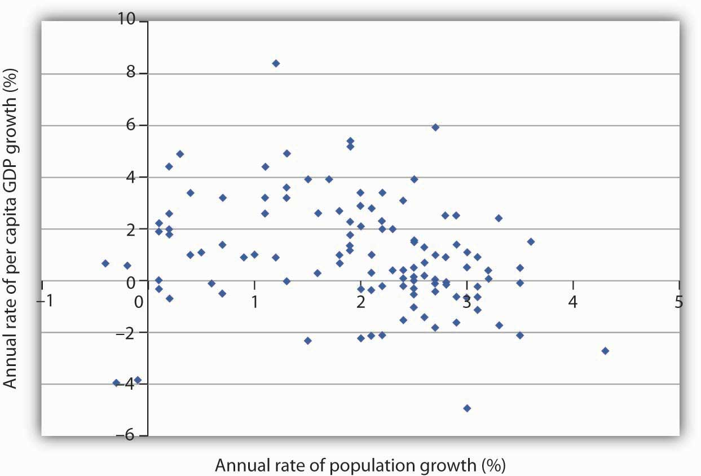
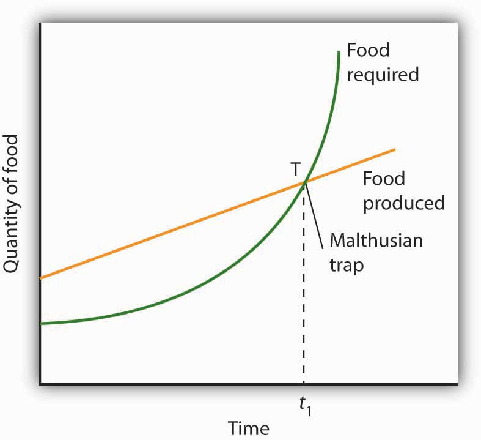
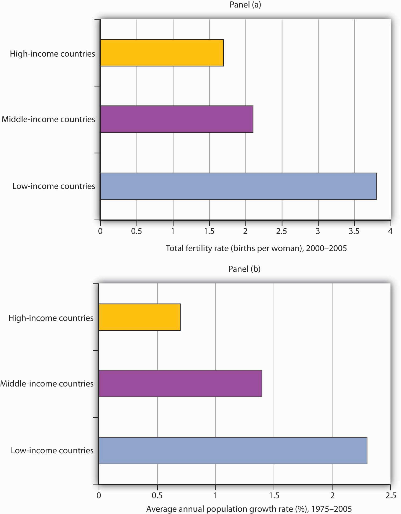
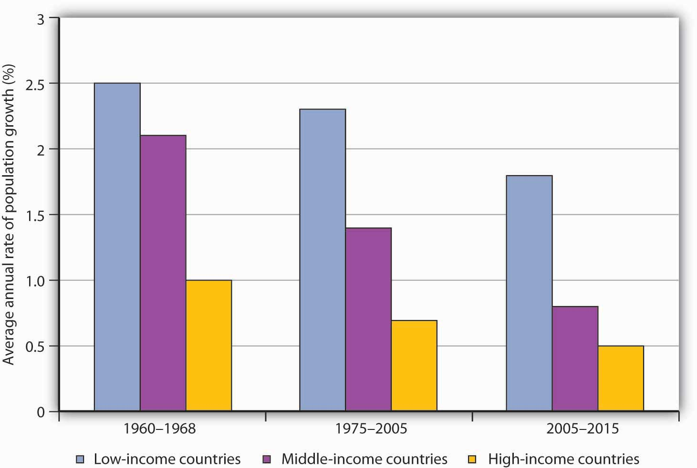

It is easy to see why some people have become alarmists when it comes to population growth rates in developing nations. Looking at the world’s low-income countries, they see a population of more than 2 billion growing at a rate that suggests a doubling every 31 years. How will we cope with so many more people? The following statement captures the essence of widely expressed concerns:
“At the end of each day, the world now has over two hundred thousand more mouths to feed than it had the day before; at the end of each week, one and one-half million more; at the close of each year, an additional eighty million. … Humankind, now doubling its numbers every thirty-five years, has fallen into an ambush of its own making; economists call it the “Malthusian trap,” after the man who most forcefully stated our biological predicament: population growth tends to outstrip the supply of food.”Phillip Appleman, ed., Thomas Robert Malthus: An Essay on the Principle of Population—Text, Sources and Background, Criticism (New York: Norton, 1976), xi.
But what are we to make of such a statement? Certainly, if the world’s population continues to increase at the rate that it grew in the past 50 years, economic growth is less likely to be translated into an improvement in the average standard of living. But the rate of population growth is not a constant; it is affected by other economic forces. This section begins with a discussion of the relationship between population growth and income growth, then turns to an explanation of the sources of population growth in low-income countries, and closes with a discussion of the Malthusian warning suggested in the quote above.
On a simplistic level, the relationship between growth in population and growth in per capita income is clear. After all, per capita income equals total income divided by population. The growth rate of per capita income roughly equals the difference between the growth rate of income and the growth rate of population. Kenya’s annual growth rate in real GDP from 1975 to 2005, for example, was 3.3%. Its population growth rate during that period was 3.2%, leaving it a growth rate of per capita GDP of just 0.1%. A slower rate of population growth, together with the same rate of GDP increase, would have left Kenya with more impressive gains in per capita income. The implication is that if the developing countries want to increase their rate of growth of per capita GDP relative to the developed nations, they must limit their population growth.
Figure 33.2 "Population and Income Growth, 1975–2005" plots growth rates in population versus growth rates in per capita GDP from 1975 to 2005 for more than 100 developing countries. We do not see a simple relationship. Many countries experienced both rapid population growth and negative changes in real per capita GDP. But still others had relatively rapid population growth, yet they had a rapid increase in per capita GDP. Clearly, there is more to achieving gains in per capita income than a simple slowing in population growth. But the challenge raised at the beginning of this section remains: Can the world continue to feed a population that is growing exponentially—that is, doubling over fixed intervals?
Figure 33.2 Population and Income Growth, 1975–2005
A scatter chart of population growth rates versus GNP per capita growth rates for various developing countries for the period 1975–2005 suggests no systematic relationship between the rates of population and of income growth.
Source: United Nations Development Program, Human Development Report 2007/2008 (New York: Palgrave Macmillan, 2007).
In 1798, Thomas Robert Malthus published his Essay on the Principle of Population. It proved to be one of the most enduring works of the time. Malthus’s fundamental argument was that population growth will inevitably collide with diminishing returns.
Diminishing returns imply that adding more labor to a fixed quantity of land increases output, but by ever smaller amounts. Eventually, Malthus concluded, increases in food production would be too small to sustain the increased number of human beings who consume that output. As the population continued to grow unchecked, the number of people would eventually outstrip the ability of the land to generate enough food. There would be an inevitable Malthusian trapA point at which the world is no longer able to meet the food requirements of the population, and starvation becomes the primary check to population growth., a point at which the world is no longer able to meet the food requirements of the population, and starvation becomes the primary check to population growth.
A Malthusian trap is illustrated in Figure 33.3 "The Malthusian Trap". We can determine the total amount of food needed by multiplying the population in any period by the amount of food required to keep one person alive. Because population grows exponentially, food requirements rise at an increasing rate, as shown by the curve labeled “Food required.” Food produced, according to Malthus, rises by a constant amount each period; its increase is shown by an upward-sloping straight line labeled “Food produced.” Food required eventually exceeds food produced, and the Malthusian trap is reached at time t1. The faster the rate of population growth, the sooner t1 is reached.
Figure 33.3 The Malthusian Trap
If population grows at a fixed exponential rate, the amount of food required will increase exponentially. But Malthus held that the output of food could increase only by a constant amount each period. Given these two different growth processes, food requirements would eventually catch up with food production. The population hits the subsistence level of food production at the Malthusian trap, shown here at point T.
What happens at the Malthusian trap? Clearly, there is not enough food to support the population growth implied by the “Food required” curve. Instead, people starve, and population begins rising arithmetically, held in check by the “Food produced” curve. Starvation becomes the limiting force for population; the population lives at the margin of subsistence. For Malthus, the long-run fate of human beings was a standard of living barely sufficient to keep them alive. As he put it, “the view has a melancholy hue.”
Happily, Malthus’s predictions do not match the experience of Western societies in the 19th and 20th centuries. One weakness of his argument is that he failed to take into account the gains in output that could be achieved through increased use of physical capital and new technologies in agriculture. Increases in the amount of capital per worker in the form of machines, improved seed, irrigation, and fertilization have made possible huge increases in agricultural output at the same time as the supply of labor was rising. Agricultural productivity rose rapidly in the United States over the last two centuries, just the opposite of the fall in productivity expected by Malthus. Productivity has continued to expand.
Malthus was wrong as well about the relationship between population growth and income. He believed that any increase in income would boost population growth. But the law of demand tells us that the opposite may be true: higher incomes tend to reduce population growth. The primary cost of having children is the opportunity cost of the parents’ time in raising them—higher incomes increase this opportunity cost. Higher incomes increase the cost of having children and tend to reduce the number of children people want and thus to slow population growth.
Panel (a) of Figure 33.4 "Income Levels and Population Growth" shows the birth rates of low-, middle-, and high-income countries for the period 2000–2005. We see that the higher the income level, the lower the birth rate. Fewer births translate into slower population growth. In Panel (b), we see that high-income nations had much slower rates of population growth than did middle- and low-income nations over the last 30 years.
Figure 33.4 Income Levels and Population Growth
Panel (a) shows that low-income nations had much higher total fertility rates (births per woman) during the 2000–2005 period than did high-income nations. In Panel (b), we see that low-income nations had a much higher rate of population growth during the 1975–2005 period.
Source: World Development Indicators database, World Bank, revised October 17, 2008.
An increase in a nation’s income can be expected to slow its rate of population growth. Hong Kong, for example, has enjoyed dramatic gains in income since the 1960s. Its birth rate and rate of population growth have fallen by over half during that time.
But if economic development can slow population growth, it can also increase it. One of the first gains a developing nation can achieve is improvements in such basics as the provision of clean drinking water, improved sanitation, and public health measures such as vaccination against childhood diseases. Such gains can dramatically reduce disease and death rates. As desirable as such gains are, they also boost the rate of population growth. Nations are likely to enjoy sharp reductions in death rates before they achieve gains in per capita income. That can accelerate population growth early in the development process. Demographers have identified a process of demographic transitionSituation in which population growth rises with a fall in death rates and then falls with a reduction in birth rates. in which population growth rises with a fall in death rates and then falls with a reduction in birth rates.
The process of demographic transition has unfolded in a strikingly different manner in developed versus less developed nations over the past two centuries. In 1800, birth rates barely exceeded death rates in both developed and less developed countries. The result was a rate of population growth of only about 0.5% per year worldwide. By 1900, the death rate in developed nations had fallen by about 25%, with little change in the birth rate. Among developing nations, the birth rate was unchanged, while the death rate was down only slightly. The combined result was a modest increase in the rate of world population growth.
Changes were much more rapid in the 20th century. By 1965, the death rate among developed nations had plunged to about one-quarter of its 1800 level, while the birth rate had fallen by half. In developing nations, death rates took a similarly dramatic drop, while birth rates showed little change. The result was dramatic world population growth.
The world’s high-income economies have completed the demographic transition. Less developed nations have begun to make progress, with birth rates falling by a slightly greater percentage than death rates. The results have been a sharp slowing in the rate of population growth among high-income nations and a more modest slowing among low-income nations. Continued slowing in population growth at all income levels is suggested in Figure 33.5 "The Demographic Transition at Work: Actual and Projected Population Growth".
Between 1965 and 1980, the world population grew at an annual rate of 2%, suggesting a doubling time of 36 years. For the world as a whole, it is predicted that population growth will slow to a 1.1% rate during the 2005–2015 period, a rate that would imply a doubling time of 65 years.
Figure 33.5 The Demographic Transition at Work: Actual and Projected Population Growth
Population growth has slowed considerably in the past several decades.
Source: United Nations Development Program, Human Development Report 2007/2008 (New York: Palgrave Macmillan, 2007) for periods 1975–2000 and 2005–2015, United Nations Development Program, Human Development Report 1990 (New York, Oxford: Oxford University Press, 1990) for the 1960–1988 period, in which categories refer to low, middle, and high human development rankings.
The text gives two main reasons why the Malthusian trap did not occur: (1) increased use of physical capital and human capital and technological improvements in agriculture and (2) higher income leading to fewer children. How do these two reasons alter Figure 33.3 "The Malthusian Trap"?
China is an example of a country that has achieved a very low rate of population growth and a very high rate of growth in per capita GNP.
China’s low rate of population growth represents a dramatic shift. As recently as the early 1970s, China had a relatively high rate of population growth; its population expanded at an annual rate of 2.7% from 1965 to 1973. By the 1980s, that rate had plunged to 1.5%. The World Bank reports a growth rate in China’s population of about 1% in the early part of the 21st century.
This dramatic drop in the population growth rate was brought about by a strict government policy by which couples are allowed to have only one child. Disincentives have been known to include fines, loss of employment, confiscation of property, demolition of homes, forced abortions, and sterilization. While the Chinese government has denied that forced abortions and sterilizations are part of its strategy, policies are administered locally, and all of the above means of coercion seem to have been employed at one time or another. If a woman who already has one child becomes pregnant, she will most likely be forced to have an abortion.
Although the policy has achieved its desired result—reduced population growth—it has had some horrible side effects. Given a strong cultural tradition favoring having a son, some couples resort to infanticide as a means of eliminating newborn daughters. When the sex of an unborn baby is determined to be female, abortion is common.
The coercive aspects of China’s policies and their undesirable side effects have been condemned by many governments around the world, as well as by nongovernmental organizations. Declarations from United Nations’ conferences—the UN Conference on Population in Cairo in 1994 and the UN Conference on Women in Beijing in 1995—have emphasized that birth rates are linked to the economic conditions of women and that improving health, education, and employment opportunities for women constitutes a better and more humane way of reducing birth rates. Fearful that pro-democracy and human rights activists from other countries might stir up those movements locally, the Chinese government actually designed the 1995 Beijing Conference so as to minimize contact between Chinese and foreigners.
There are signs, though, that Chinese officials may have heard the message. In a number of counties in China, experimental programs with slogans such as “Carry out Contraception and Family Planning Measures Voluntarily” are underway. The new approach to family planning emphasizes health care, education, and reduction in poverty to encourage women to have fewer children.
International pressures may only be part of the reason for the emerging Chinese change of heart. In the late 1980s, Chinese officials discovered that the number of births in China was being underreported by about 30%. The aggressive policies may not have been as successful as they were cracked up to be.
The first reason raises the curve labeled “Food produced” and suggests that it is exponential rather than linear. The second reason lowers the curve labeled “Food required.” The result is that the time t1, when the amount of food required exceeds the amount produced, is pushed further into the future, perhaps indefinitely if the “Food produced” stays above the “Food required” curve. The latter seems to have been the experience of today’s rich countries.